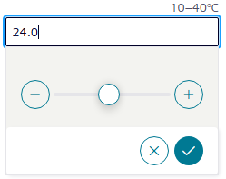
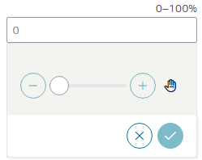
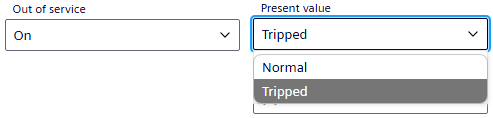
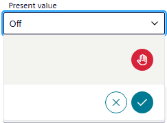

Commanding properties
Change property values
- Navigate through the structure to display the desired object.
- Select the Properties tab and then the desired command mode.
- Operating properties:
- analog input object, either type the new value or use the slider.

- analog output object, either type the new value or use the slider.

- digital input object, select the value from the drop-down list.
Note: Out of service must be On. 
- digital output object, select the value from the drop-down list.

- Select to send the command.